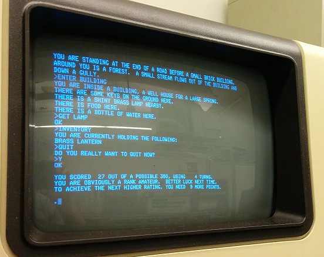
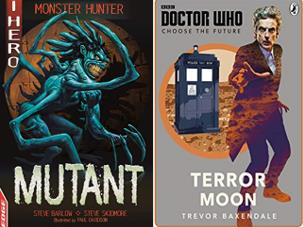

Build a Python adventure game.
Text based adventures were some of the first ever computer games. The player entered simple text instructions to control the game, for example, a typical screen is shown below:
Sometimes games would give you a choice, for example:
Do you want to turn left (L) or right (R) or say Hello (H) to the elf? [enter L, R, or H]
which made them easier to program. You may have seen a similar thing with "Choose your own adventure" books, which say things like: "If you want to turn left, turn to page 43; to turn right, turn to page 56".
These games are often called Interactive fiction because you build up a story by making choices. The earliest example was a program called Adventure, and a very popular version was Zork.
This tutorial will teach you some basic Python, building up a text adventure game that you can adapt for your friends.
To do this programming, you'll need Python 3, the language we're going to write in. The best way to install this is to install Anaconda, which will come with all the code and editors you'll need.
{kind=link}